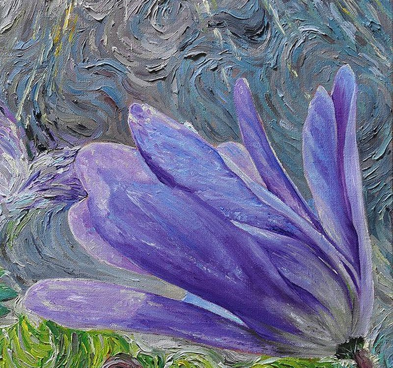
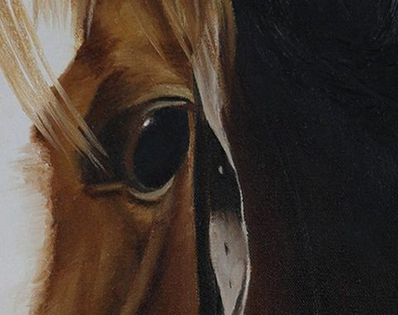
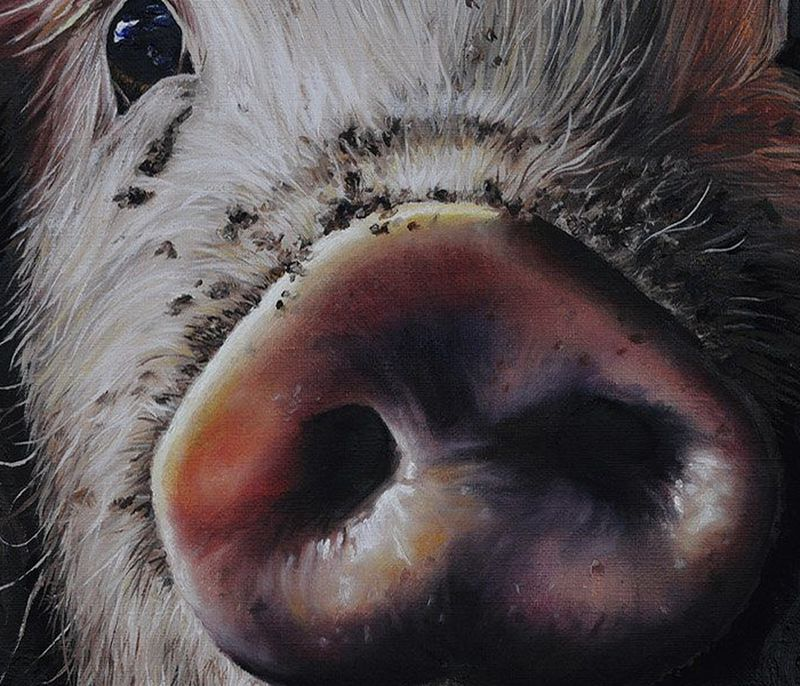

No. 04Available original
Old Barn
- Medium
- Oil on canvas, 2024
- Size
- 16 × 20 in
- Frame
- Framed by Scott in oak from his own land: stained dark grey, painted white and antiqued (18 × 22 in, 2.25 in deep).
Available, ask about it
Ask about this painting
Studio JournalOriginal oil paintings by Scott Michael Beckman


Fig. 1Wild Radiance, 30 × 40 in, oil painting
Scott Michael Beckman paints flowers, animals, landscapes and people in oil, building every canvas layer by layer until it feels alive. Some even carry a hidden message.
Selected work


Layer by layer, until it feels alive.


Up close




A hidden message
01192002
Scott gave Yellow Flowers to his wife Jana on their wedding day, January 19, 2002. Hidden in the texture of the petals and background is a message only they knew was there. More than twenty years later, it’s still the piece she loves showing people most.
Drag across the painting to wipe back the paint.
Put your own message in a painting

Available originals
Scott mills the oak for his frames from trees on his own land, so the frame is as one-of-a-kind as the painting.
No. 04Available original
Available, ask about it
No. 08Available original
Available, ask about it


“Art is my lifelong pursuit. Each new work is an opportunity to grow and challenge myself. I strive to make every painting the best I’ve ever done.”
04 — About the artist
Born in Cincinnati and now living in Central Arkansas, Scott is a U.S. military veteran and registered nurse who worked in Texas ICUs during the Covid-19 pandemic. Those years shape how he paints: patiently, and with an eye for the small moments that matter.
Read Scott’s story